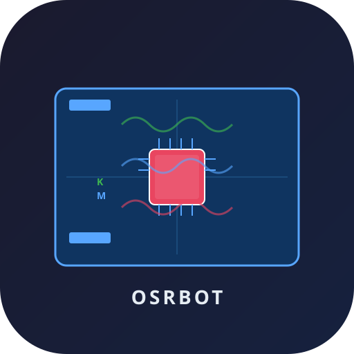

键盘已捕获
Shift+Esc 退出
鼠标位置: {{ mouseDisplayX }}, {{ mouseDisplayY }}

未检测到 OSRBOT 本地服务
请先运行 OSRBOT 程序，或确认设备已连接
🌐 局域网控制
同一 WiFi/局域网下的电脑、手机、平板，打开浏览器访问：
{{ lanURL }}
即可远程操控被控机键鼠，无需安装任何软件
⚠️ 仅限可信网络中使用！请勿暴露到公网